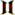

My program doesn't have bugs. It just develops random features.
UE2:WebServer (U2)
From Unreal Wiki, The Unreal Engine Documentation Site
|  | Object >> Actor >> Info >> InternetInfo >> InternetLink >> TcpLink >> WebServer |
Contents
| This is an auto-generated page and may need human attention. Please remove the {{autogenerated}} tag if the page seems reasonably complete or replace it with the {{expand}} tag if the page is not yet complete. |
null
Properties[edit]
ApplicationObjects[edit]
Type: WebApplication
Array size: 10
ApplicationPaths[edit]
Type: string
Array size: 10
Modifiers: config
Default value, index 0: "/ServerAdmin"
Default value, index 1: "/images"
Applications[edit]
Type: string
Array size: 10
Modifiers: config
Default value, index 0: "U2WebAdmin.U2ServerAdmin"
Default value, index 1: "U2WebAdmin.U2ImageServer"
bEnabled[edit]
Type: bool
Modifiers: config
Default value: True
ConnectionCount[edit]
Type: int
DefaultApplication[edit]
Type: int
Modifiers: config
ListenPort[edit]
Type: int
Modifiers: config
Default value: 80
MaxConnections[edit]
Type: int
Modifiers: config
Default value: 30
ServerName[edit]
Type: string
Modifiers: config
ServerURL[edit]
Type: string
Default values[edit]
| Property | Value |
|---|---|
| AcceptClass | Class'UWeb.WebConnection' |
Functions[edit]
Events[edit]
BeginPlay[edit]
event BeginPlay ()
Overrides: Actor.BeginPlay
Destroyed[edit]
event Destroyed ()
Overrides: Actor.Destroyed
GainedChild[edit]
event GainedChild (Actor C)
Overrides: Actor.GainedChild
LostChild[edit]
event LostChild (Actor C)
Overrides: Actor.LostChild